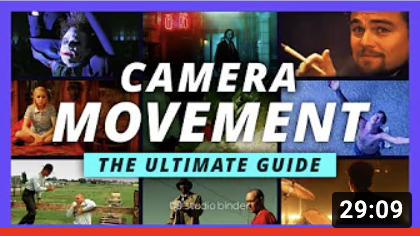
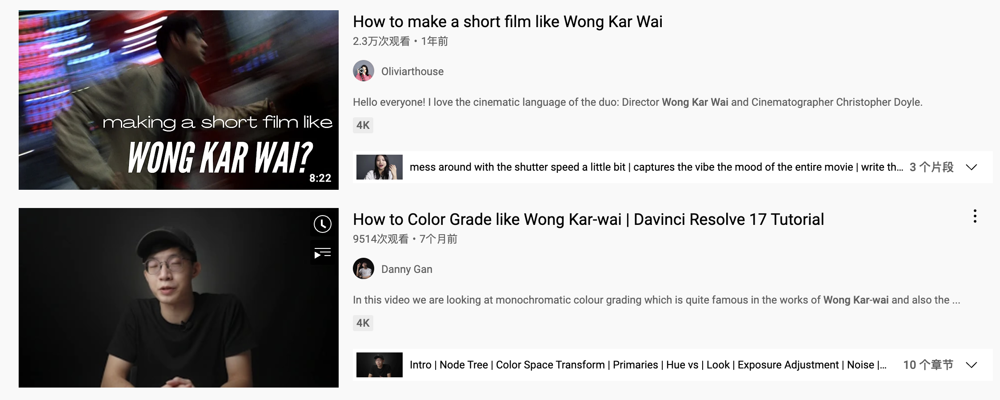

How to Shoot As a Professional
Nowadays, shooting videos can be quite easy because anyone who has a mobile phone can readily record videos by clicking on the record button in camera mode. But how to shoot videos better as a professional?
Although I don't consider myself professional enough, I can still share my relevant experience to make your first attempt go more smoothly.
Useful Theories
You may think theory is dull and why not just do it, but I would say there are some necessary theories for making good videos.
The Concept of Shots
The shots are defined by the amount of subject matter that's included within the frame of the screen. Although there are many different kinds of shots in the cinema, most of them are subsumed under the six basic categories:
- the Extreme Long Shot
- the Long Shot
- the Full Shot
- the Medium Shot
- the Close-up
- the Extreme Close-up
Camera Movement
To make nice videos, you are more likely to move your cameras rather than just keeping it in one position throughout, then you need to know how to better move your camera. There are several basic moving camera shots for you to choose while shooting.
Click the cells below to know more about each type of camera movement
If you want to know more about theories, I highly recommended Understanding Movies, which is a well-known book in the field of cinema. You will find it interesting, especially if you are a film lover, because the author explains the theories with a wealth of examples from films.
Also, don't forget that you can always learn many things through watching videos. I just found one talking about camera movement in a way easy for people to understand. Please click the cover of the video to watch it if you are interested.
Shooting Equipment
As a beginner, you may not have a camera. Don't be worried! I don't think lack of professional equipment can prevent you from making great videos. As long as you have enough enthusiasm and a good idea, you can make good videos with only a mobile phone. Let me show you an example.
The video on the left-hand side is 3 Minutes, a short film of Apple directed by Peter Chen. Every shot in this film is finished using IphoneX. You can see how Peter achieved this by watching the behind the scenes video on the right-hand side. You may find dolly shots play an important role in 3 Minutes by drawing the audience into the perspective of the young boy. IphoneX is quite ideal to achieve this since it is much lighter than professional equipment.
You see, you can always find the advantages of the devices you currently have and use them to your advantage.
Good Way to Improve
Apart from practicing shooting more, a good way to improve your skill is imitating.
For example, if you can imitate a favourite film clip by yourself. You will definitely learn a lot in the process by constantly thinking about why the director shot in this way.
I see many people are keen to imitate Wong Kar Wai's film because his style is so unique. Why not try to imitate the films of the director you like?

Click to contact me or follow my feed